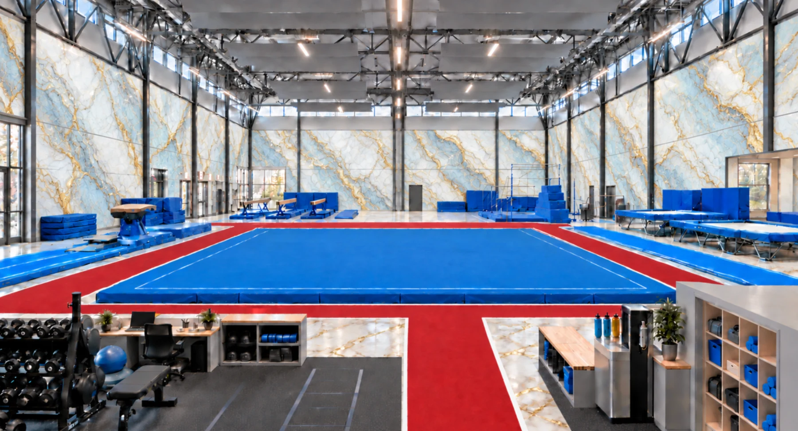
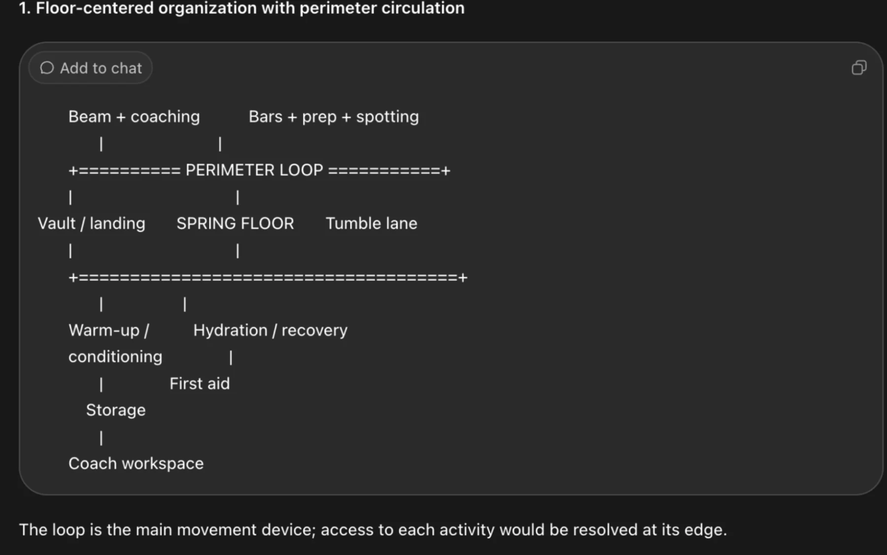
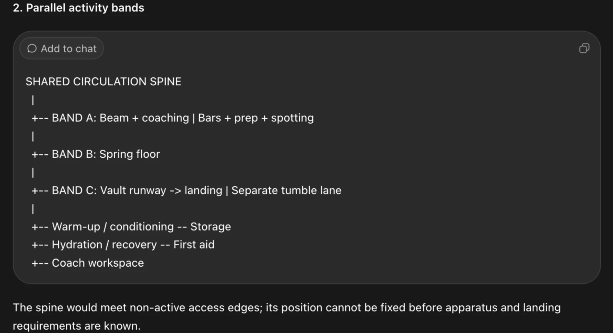
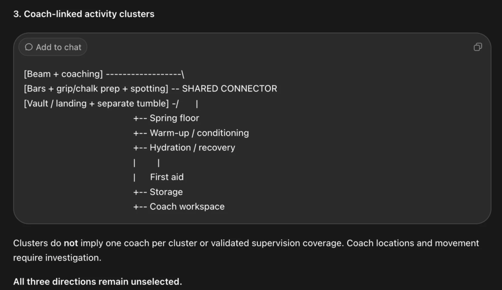
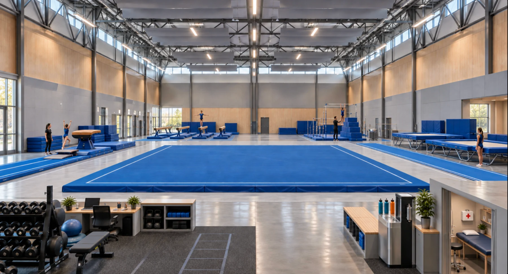

Remove distractions
Coordinate-based edits removed unintended people so the spatial arrangement could be inspected more clearly.
02 / 3D environment / 2026
A future training hall organized around a central spring floor and a visible perimeter route. Spatial planning, targeted image revisions, and a Blender walkthrough explore how equipment, coaching, and everyday transitions can share one space.

The supplied camera preview moves from an elevated overview into the training hall. Its documented direction follows the red route toward the vault, beams, bars, and hydration area.
Supplied Blender preview · 640 × 360 · Silent
Download video ↓Video linked in the process report ↗One floor.
Connected routines.
The classroom brief considers repeated beam practice, grip and chalk preparation, group warm-up, and hydration. Three organizational ideas were compared: a floor-centered perimeter loop, parallel activity bands, and coach-linked clusters.
The later images develop the floor-centered direction. A continuous red route makes movement legible while the blue apparatus and marble-style finishes give the hall a coordinated identity.
These are fictional classroom assumptions. Apparatus clearances, material suitability, and construction feasibility have not been validated.




Coordinate-based edits removed unintended people so the spatial arrangement could be inspected more clearly.
A red pathway with white borders distinguishes circulation from the blue training surfaces.
Blue, white, and gold marble-style finishes connect the architectural palette to the equipment.
Comparing layouts made the relationships between training, coaching, and circulation explicit. Localized edits then made it possible to review one change at a time while preserving the overall scene.
The concept image communicates an intended atmosphere; the Blender walkthrough presents the modeled space over time. The full report records the brief, alternatives, visual references, revisions, and camera direction.
Read the full design process PDF · 27 MB ↗